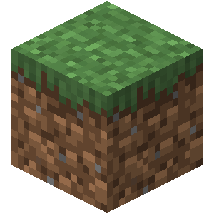

A Simple Way To Track Your Progress
Speedrunning any game is a journey of wins, losses, struggling and learning. Track best runs and see how you are improving! Export your data into a plot to visualize how much you have grown since the beginning! Track your nether, stronghold, and end enters, starting structure, and bastion type!

Devblog 09/01:
Proposed Database Table: Numerical tracking of 3 different enter times (time format), string tracking starting structure and bastion type. Describe several key moments in a speedrun.
- Nether time: Time Format numerical
- Stronghold time: Time Format numerical
- End time: Time Format numerical
- Starting structure: String
- Bastion type: String
Server Page
Click here to see my published Server Side Page.
My Database Experience:
No experience coding one, but I do interact with one at work made by some college kids 20 years ago (its not great).
My Web Development Experience:
I was a co-leader of my highschool Computer Science Club where we taught our members very rudimentary web development skills like basic HTML, CSS, and JS functionality. We would use premade tutorials and customize it to our needs. Never did anything more beyond that.
HW 1 Home Page
I had trouble getting started, I decided to upload everything to github so I can work on my main desktop and laptop whenever, but then it somehow broke the server's abililty to access my index.html on local host. I have it working now, I basically just reset everything to how it was before I did git init. Beyond that this assignment was fairly simple. Seeing the h3 and p elements on the page is already giving me ideas for how this could get developed further and how other websites are actually fairly simple, they just have a bit more touchup.